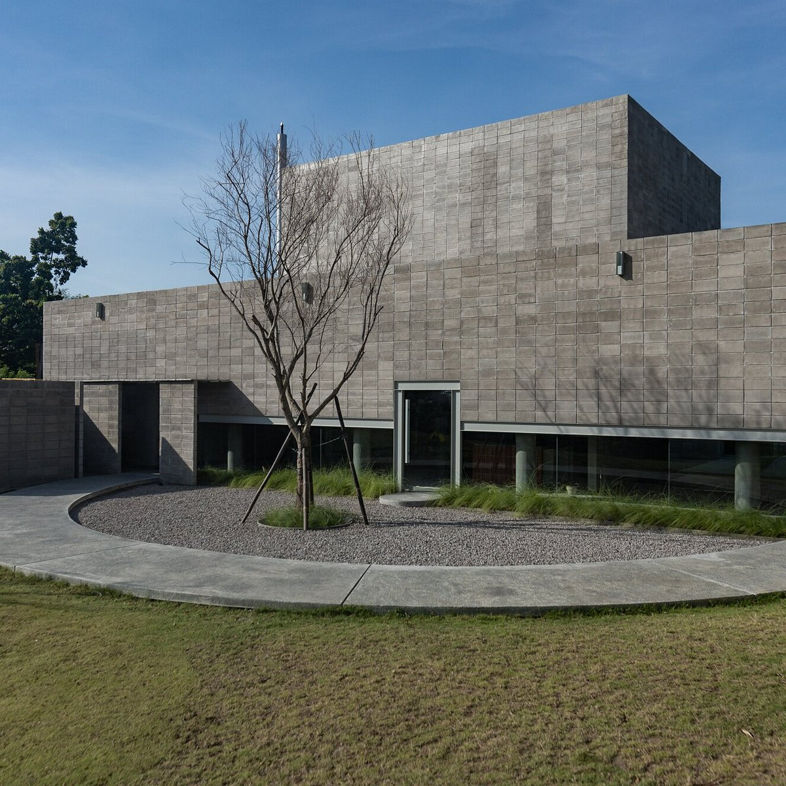
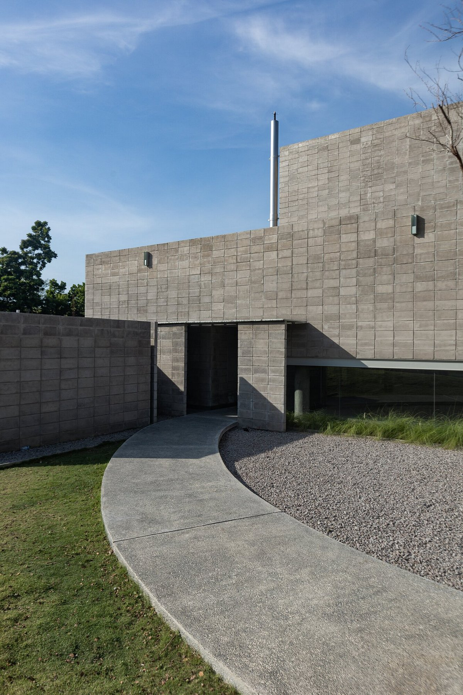
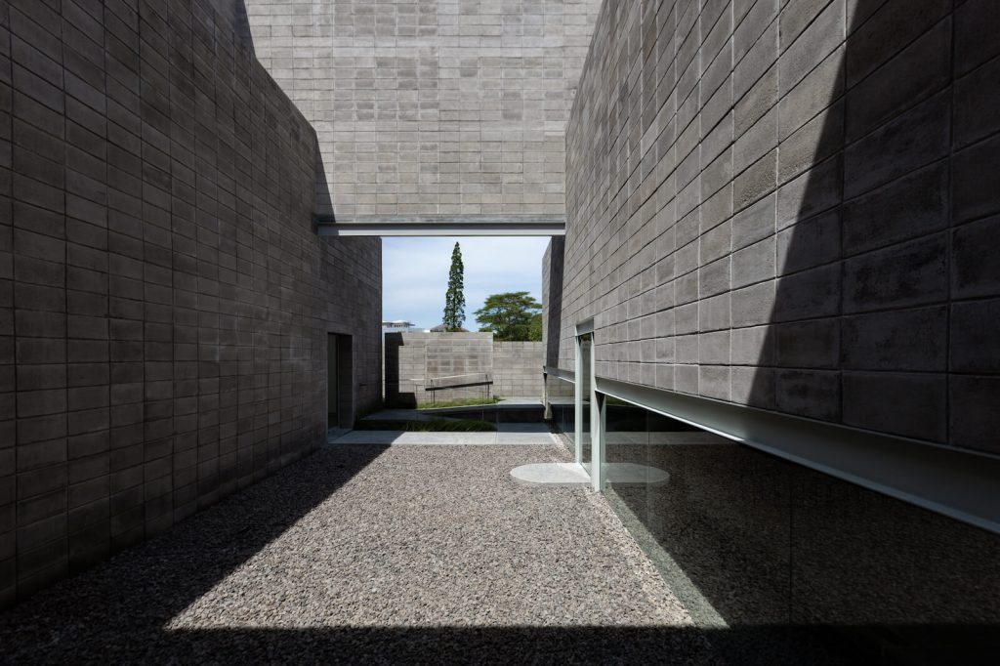
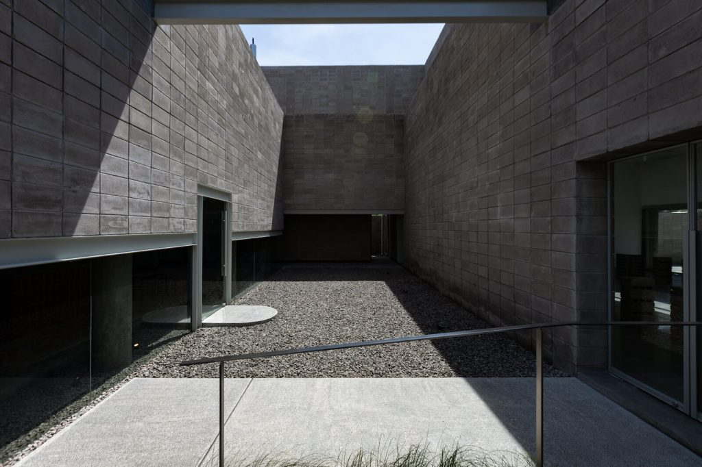

Konseptual
Gedung Orasis dirancang oleh Hermawan Dasmanto – Founder ARA Studion yang merupakan salah satu biro arsitek di Indonesia, yang juga dikenal sebagai kurator untuk beberapa pameran arsitektur dan konsultan sejumlah proyek ruang publik vital di beberapa kota di Indonesia.
Melalui isu dari lokasi, dengan menganalisa kebisingan, potensi, pemandangan, dan identitas pemilik, konsep introvert dengan tampilan eksternal yang tertutup dan monokrom cenderung lebih diam; berfokus ke dalam perasaan di dalam diri. Sebagai sebuah ruang, Orasis tidak ingin tampil menjadi dominan sehingga memiliki fleksibilitas yang tinggi dalam pengkurasian karya seni sebagai ruh dari eksistensi fisik bangunan.
Ruang



Sewa Ruang
Orasis Art Space memiliki ruang-ruang yang didesain selayaknya blank canvas sehingga adaptif terhadap berbagai bentuk dekorasi. Ruang-ruang yang berada dalam habitat bernama Orasis Art Space dapat digunakan untuk acara-acara pribadi seperti engagement, wedding, birthday party dan corporate event. Selain itu, dapat digunakan untuk sesi photoshoot atau videoshoot seperti prewedding maupun komersil.
Silahkan unduh katalog ruang-ruang tersedia pada link terlampir di bawah. Untuk informasi lebih lanjut hubungi kontak yang tertera.
Kontak
business@orasis.art
+62 821–4297–0689

1. Gallery Utama
Luas
113,92 m2
Kapasitas
85 orang


2. Atria
Luas
43,296 m2
Kapasitas
25 orang